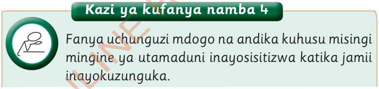

Kazi ya kufanya namba 4
Fanya uchunguzi mdogo na andika kuhusu misingi mingine ya utamaduni inayosisitizwa katika jamii inayokuzunguka.

Fanya uchunguzi mdogo na andika kuhusu misingi mingine ya utamaduni inayosisitizwa katika jamii inayokuzunguka.